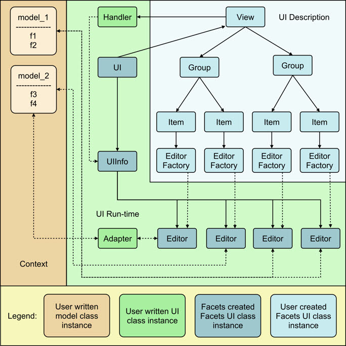
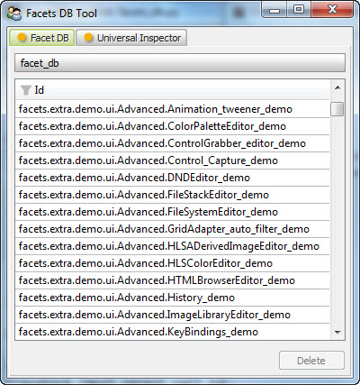

Facets UI (User Interface) is the part of the Facets framework that allows you to convert your Facets models into interactive, graphical user interfaces (often called GUI’s). Taken together, the many varied components of Facets UI form the visualize part of the Facets tao.
Let’s start our exploration of the Facets UI by taking a quick tour of its major functional elements:
Adapters help bridge the gap between the data contained in a model and the kind of data that a particular editor knows how to manipulate. They are more of a design pattern used thoughout the Facets UI as opposed to an abstract or concrete base class. Adapters are typically used in conjunction with Editor classes that perform more complex types of data editing and presentation.
For example, the GridAdapter is an adapter that works with the GridEditor to allow you to map nearly any type of model data into a form that can be displayed and edited using a tabular grid.
Note
There is a strong connection between EditorFactory and Editor classes. A particular EditorFactory class is used to create instances of a related set of Editor classes.
As a result, the distinction between the two sometimes get blurred. For the most part, as a Facets developer you will be using EditorFactory classes. In some cases, when you are writing a custom Handler subclass, you may have occasion to deal directly with the Editor instances created by an EditorFactory instance.
The blurring between the two types of classes is further aggravated by the fact that all standard Facets EditorFactory classes have names that end in Editor rather than EditorFactory (e.g. TextEditor and GridEditor). This is done intentionally, to simplify reading program code and because as a developer you never need to directly refer to an Editor class by name (unless you are defining a custom EditorFactory/Editor of your own).
That is, Facets chooses to allow you to write:
Item( 'name', editor = TextEditor() )
rather than the more technically correct (but illegal):
Item( 'name', editor_factory = TextEditorFactory() )
Please keep this distinction in mind while reading through this section.
The relationship between the various Facets UI classes just described can be shown graphically as follows:
As you can see, the figure is divided into three main sections:
Creating user interfaces in Facets is a matter of creating and displaying Views. If you read the introductory section on visualize, then you’ve seen several examples of this already. In this section we’ll introduce you to the most common techniques used.
Let’s start with how to define a View. For many Views, the simplest approach is to define them statically as part of a class definition:
class MyGame ( HasFacets ):
player = Str
score = Int
status = View( 'player', 'score' )
Here we’ve defined a class MyGame containing two facets, player and score, as well as a View called status for displaying them. The status View becomes part of the class definition and is available to client code through a number of mechanisms we’ll be exploring in the following sections.
A variation on the above approach is the define a method that returns the View:
class MyGame ( HasFacets ):
player = Str
score = Int
def status ( self ):
return View( 'player', 'score' )
From the point of view of Facets, these two techniques are nearly identical as we shall see. The second technique is slightly longer than the first, but is useful in cases where the View returned contains dynamic content which may not be available until the View is displayed:
class MyGame ( HasFacets ):
player = Str
score = Int
def status ( self ):
return View( 'player', 'score', title = 'Player: ' + self.name )
In this example, we’ve included the name of the player in the View’s title. Since this is usually not known until the program is running, it make’s since to define the View using a method.
Another less commonly used design is to define the View at the point of use:
class MyGame ( HasFacets ):
player = Str
score = Int
game = MyGame( player = 'Tom', score = 100 )
game.edit_facets( view = View( 'player', 'score' ) )
The edit_facets method displays a View, which in this example we create and pass as a argument to the method. In general this is a less flexible technique since it does not allow the View to be reused in other contexts very easily.
Facets provides two methods for displaying Views: edit_facets and configure_facets. Of these, edit_facets is by far the one most frequently used, and is the one we’ll describe in this section.
The edit_facets method accepts the following list of optional keyword arguments:
Specifies the kind of View to display. The possible values are:
We’ll be describing these different View kinds in the section on View objects. The default value is None, which means the value of the View’s kind facet should be used. Specifying kind as an argument to edit_facets allows you to override the View’s kind if necessary.
Specifies whether or not the View being displayed is scrollable. A value of True means the View should support a vertical scroll bar that allows the contents of the View to be scrolled. A False value indicates the View should be large enough to display the entire contents of the View without scrolling.
The default value is None, which means that the View’s scrollable facet should be used to determine whether a scroll bar should be added. Again, specifying scrollable as an argument allows you to override the View’s value if necessary.
Every Facet’s object has a View associated with it called its default view. This is the View displayed when no explicit view is specified with an edit_facets or configure_facets method call. The rules used to define the default view are as follows:
It is very common to define a class with only a single statically defined View. That View then becomes the default view for the class, no matter what its name is. This fact is reflected in many examples in this guide, where you will see code like:
class DieRoll ( HasFacets ):
die_1 = Int
die_2 = Int
view = View(
Item( 'die_1', style = 'readonly' ),
Item( 'die_2', style = 'readonly' )
)
def _die_1_default ( self ): return randint( 1, 6 )
def _die_2_default ( self ): return randint( 1, 6 )
DieRoll().edit_facets()
This code displays the View called view even though it is not explicity referenced in the edit_facets call, since it is the default view for the class.
There are a number of different Group subtypes that support various layout styles and approaches:
One hallmark of a well-designed and user-friendly application is its ability to customise its behavior to fit each user. While this customisation can taken many forms, we’ll mention a few typical examples:
One important feature of the Facets UI system is that it makes implementing these types of user preference behaviors very simple. In the remainder of this section we’ll explain the details of how to enable and use the Facets user preference system when creating user interfaces.
As we’ve already learned, each Facets user interface is created from a View object. And each View instance has a string-valued id facet used to identify the View to the Facets user preference system. If the value of id is the empty string, then no user preference information is saved or restored for the View.
However, if id is non-empty, its value is used as a key for saving and restoring all user preference information for the View in the user specific Facets data base. Thus all you need to do to enable Facets user preference management system is to make sure that your View instances have non-empty id facet values.
In addition to enabling user preference management, you automatically also get one of the user preference items we mentioned earlier, namely that of saving and restoring an application window’s or dialog’s size and position from one use to the next.
That is, if a View’s id is non-empty, then each time the View is displayed, Facets checks to see if it has size and position information for the View in its data base, using the View’s id facet as the data base key. If it does,the saved preference information is used to size and position the View when displayed to the user. If it does not, then the size and position information specified by the View object itself is used instead.
Similarly, when a View is closed, Facets checks the View’s id facet. If it is non-empty, the size and position of the View’s window or dialog is used to update (or create) the user preference information saved in the Facets data base under the View’s id facet’s value. If the View’s id is empty, the data base is not updated.
Note
Facets never deletes user preference information from the data base. If you use a non-empty View id for a while, and later decide not to use it (i.e. make it the empty string), then any existing Facets data bases containing user preference data saved under the original View id will not be affected. The user preference information will simply sit there unused until it is explicitly deleted.
So, now that you’ve learned about saving user preference information by setting a View’s id facet to a non-empty value, what should you set the value to? Good question!
Since all user preference information gets saved into each user’s personal Facets data base, we should try to avoid stepping on any other Facets application’s user preference data if at all possible. So using a View id of `My View` may not be a good choice.
The recommended convention for View id values is to use names of the form: `package1.package2. ... .module.class` to avoid accidental name collisions. Of course, the string refers to the Python package, module and class where the associated View is defined. For example:
View(
...
id = facets.extra.tools.image_knife.ImageKnife
)
Since fully-qualified module and class names should normally be unique within a user’s Python path, following this convention should avoid most problems.
Of course, there are some additional cases to consider:
For the first case, appending the View’s name to its id should be sufficient to resolve the problem. For example:
class MyApp ( HasFacets ):
...
main_view = View(
...
id = 'my_package.my_app.MyApp:main_view'
)
options_view = View(
...
id = 'my_package.my_app.MyApp:options_view'
)
The second case can arise when you create some kind of reusable component with a View that might be used in different applications or contexts. In cases like this, even though it is the exact same View, the user may want to have different preference settings saved from one application or context to the next.
In this case, you should probably include some information in the View’s id that identifies the application context as well as your View. For example, you might add an application settable id or name facet to your component the application can use to identify itself. For example:
class MyComponent ( HasFacets ):
...
name = Str( 'default' )
...
def default_facets_view ( self ):
return View(
...
id = 'my_package.my_component.MyComponent:' + self.name
)
In this case we’ve qualified our unique View class name with our (hopefully) unique application context name to create a composite id that allows it to be used by multiple applications with both application and user specific preference settings. Note also how we have dynamically created the View in order to set the id facet using the application provided name information.
The conventions outlined above are also the ones used by Facets itself, as shown by the following screen shot, which shows the FacetDB tool displaying some of the user preference View id keys saved on the author’s system:
Views contain Groups used to organize the appearance of a user interface is various ways, such as by using notebook tabs (Tabbed) or horizontal and vertical splitter bars (HSplit and VSplit). Using groups like these give users the ability to organize and adjust a window or dialog’s content to their liking. In such cases, users probably will also want to be able to persist their tab organization and splitter bar settings from one session to the next.
You can accomodate this in your application simply by setting the id facet of any Group (such as a Tabbed, HSPlit or VSplit instance) to a non-empty string, just as you did for the View instance. For example:
class MyApp ( HasFacets ):
...
view = View(
Tabbed(
Item( ... ),
Item( ... ),
Item( ''' ),
id = 'tabbed'
),
...
id = 'my_package.my_app.MyApp'
)
Setting the Group’s id to a non-empty string saves and restores the tab and splitter bar position information for the Group as part of the user preference data for the containing View.
There are a few additional items worth noting:
Unlike the View id, which should be unique for a given user, the Group id value only needs to be unique within its containing View. This was illustrated by the Group id value of tabbed used in our preceding example.
The reason for this is simple. All of the user preference data for a given View is stored in the Facets data base under the key given by the View’s id value. The user preference data stored in the data base is actually a dictionary of values whose keys are the Group and Item id values contained in the View. When the View is created or closed, Facets associates each part of the user preference data for the View with each Group or Item it contains using its corresponding id value. For this reason, the Group (and Item) id values only need to be unique with their View.
Another important point is that it is only necessary to assign a non-empty Group id to the outermost Group in a nested series of Tabbed, HSplit and VSplit groups. The reason is that internally Facets collapses all nested Tabbed, HSplit and VSplit groups into a single control called a DockWindow. The DockWindow manages all items contained within the nested series of groups as a single entity. Consequently you only have provide a Group id for the outermost such group, which is where the corresponding DockWindow is defined. At run-time the DockWindow saves or restores all of the tab and splitter bar information it maintains for all of the nested groups as a single entity under the outermost Group’s id.
Note that this applies as long as the nested groups consist only of Tabbed, HSplit or VSplit instances. Introducing Groups of other types into the hierarchy breaks the chain. If this situation occurs, you will have to define another unique Group id for the outermost Tabbed, HSplit, or VSplit group in the inner chain.
The next two examples illustrate these scenarios:
view = View(
Tabbed(
HSplit(
VSplit(
Item( ... ),
Item( ... )
),
VSplit(
Item( ... ),
Item( ... )
)
),
VGroup(
Item( ... ),
Item( ... )
),
id = 'tabbed'
)
)
In this case, only the outer Tabbed group needs a non-empty id value, since the nested HSplit and VSplit groups form an unbroken chain. The VGroup instance does not break the chain because it does not contain any additional groups that start a new chain:
view = View(
HSplit(
VGroup(
HSplit(
Item( ... ),
Item( ... ),
id = 'hsplit2'
),
HSplit(
Item( ... ),
Item( ... ),
id = 'hsplit3'
)
),
VGroup(
Item( ... )
Item( ... )
),
id = 'hsplit1'
)
)
In this example, the situation has changed. The two inner HSplit groups are separated from the outermost HSplit group by a VGroup, which is not a Tabbed, HSplit or VSplit group. Internally, Facets creates three independent DockWindow controls to manage the various UI elements and each requires a unique Group id to save its user preference layout information under.
Setting a non-empty Group id on a non-Tabbed, HSplit or VSplit group has no effect since no other Group types currently have user preference data to save or restore.
You can also save and restore user preference data for any of the Item instances in a View. Follow the same procedure as before: simply assign a non-empty value to the Item’s id facet. As with a Group id, the value only needs to be unique within the View the Item is contained in.
The user preference data for an Item is actually associated with the Editor used by the Item. Some Editors have user preference data that can be saved and restored, and others do not. Assigning a non-empty id to an Item with an Editor that does not have any user preference data has no effect.
The following is a list of standard Facets editors that support saving and restoring user preference data:
Here are a few final words of warning and advice on using the Facets user preference management system: